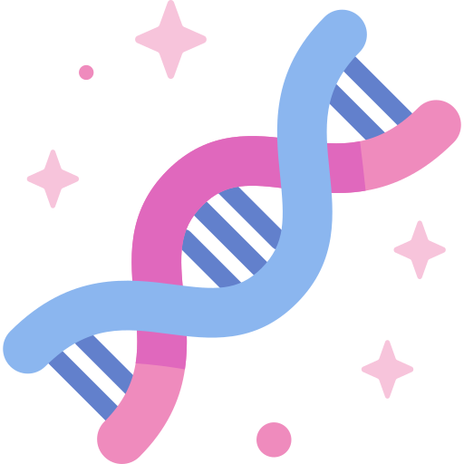
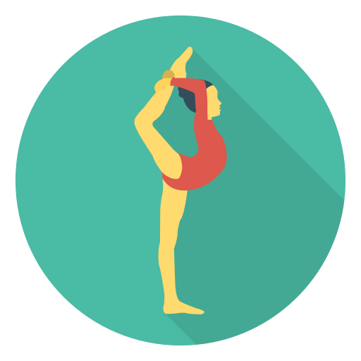
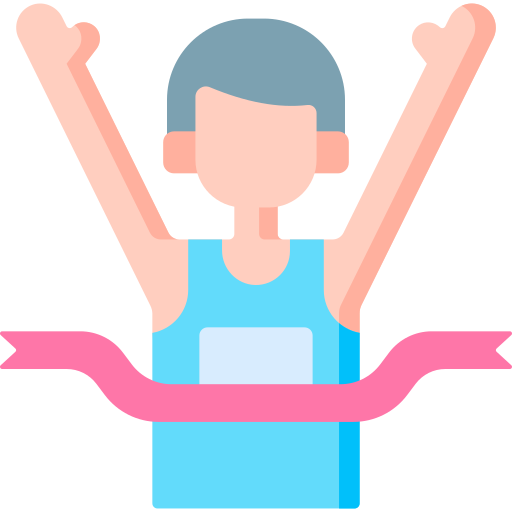

I'm Jessica.
(Call me Jay.)
I'm an aspiring programmer.

I'm an aspiring programmer.
I'm Jay. Highly productive, adaptable, and dedicated to solving problems.
Many of my skills as a potential employee have been developed through my recent A-Levels.
  |
|
|
 |
I spend my downtime writing small fictional stories and engaging with people online about books, movies and TV shows. I enjoy playing building/simulation games such as The Sims 4 and Minecraft. I mod these games and am curious about the process of modding and hope to be able to develop my own mods in the future.
| December 2021 to Current | Volunteer Swimming Coach
Marlins Swimming Club | Redhill, Surrey |
 |
|
| November 2017 to August 2021 | Gymnastics Coach
Springfit | Redhill, Surrey |
|  |
|
| 3rd October 2021 | Technical Support for the London Marathon |
|  |
|
Certifications |
|
|
Education |
A-Level:
|
GCSE:
|
Personal Achievements |
|
|
If you believe I can be an asset to you or your business, feel free to reach out.
Email: jessicahutsonpope@gmail.com
Swimming icons created by Freepik - Flaticon |
Gymnast icons created by DinosoftLabs - Flaticon
Marathon icons created by Freepik - Flaticon |
Code icons created by Freepik - Flaticon
Team icons created by Freepik - Flaticon |
Equation icons created by Freepik - Flaticon
DNA icons created by Freepik - Flaticon